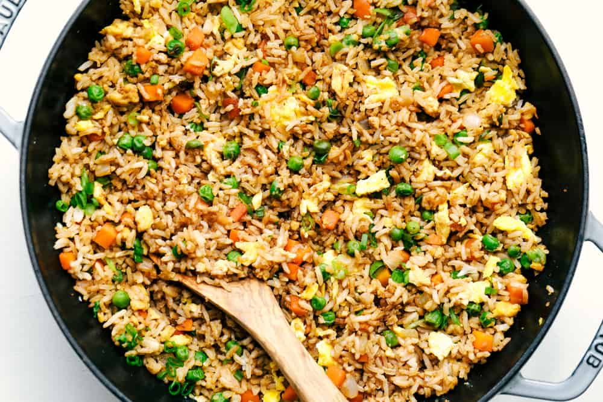

Fried Rice

A good meal
A dish that makes plain old rice delicious.
It's a simple dish but it tastes pretty good.
Ingredients
- 1 egg
- 1 cup of rice
- Veggies like carrots
- Soy sauce
- Cooking Oil
Steps
- Turn on the stove to medium heat
- Add some oil on the frying pan and wait for it to heat.
- Add the vegetable/s to the side and the beaten eggs on the other side.
- Mix them together until they look a bit cooked.
- Add the rice and combine it with the veggie and egg mixture. Pour the soy sauce on top and stir until it is heated throughout.